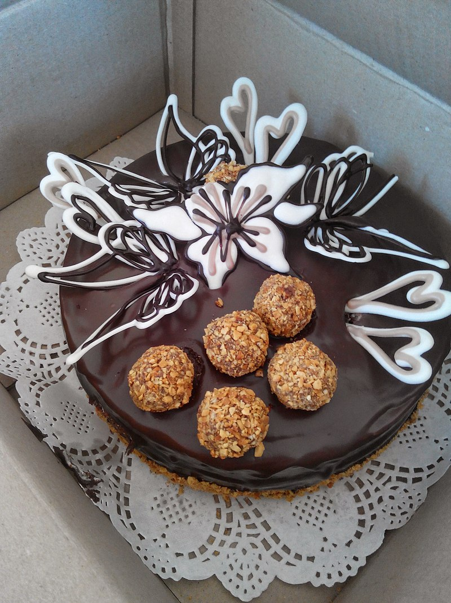
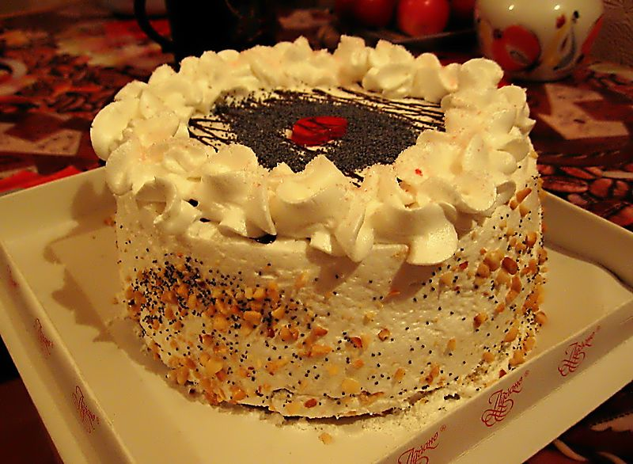
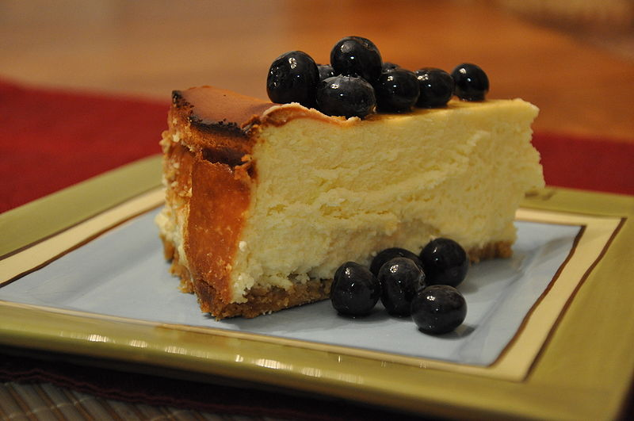

<!DOCTYPE html>
<html>

<head>
    <meta charset="utf-8">
    <meta name="viewport" content="width=device-width, initial-scale=1.0">
    <title>Untitled</title>
    <link rel="stylesheet" href="https://cdnjs.cloudflare.com/ajax/libs/twitter-bootstrap/4.1.3/css/bootstrap.min.css">
    <link rel="stylesheet" href="https://cdnjs.cloudflare.com/ajax/libs/ionicons/2.0.1/css/ionicons.min.css">
    <link rel="stylesheet" href="assets/css/style.css">
</head>
 <style>
   #navbar ul{
        display: none;
        background-color: #f90;
        position: absolute;
        top: 100%;
      }
      #navbar li:hover ul { display: block; }
      #navbar, #navbar ul{
        margin: 0;
        padding: 0;
        list-style-type: none;
      }
      #navbar {
        height: 30px;
        background-color: #666;
        padding-left: 25px;
        min-width: 470px;
      }
      #navbar li {
        float: left;
        position: relative;
        height: 100%;
      }
      #navbar li a {
        display: block;
        padding: 6px;
        width: 100px;
        color: #fff;
        text-decoration: none;
        text-align: center;
      }
      #navbar ul li { float: none; }
      #navbar li:hover { background-color: #f90; }
      #navbar ul li:hover { background-color: #666; }
 </style>
<body>
    <div class="footer-dark">
        <footer>
		<a href="index2.html"></a>
   <ul id="navbar">
      <li><a href="#">Про нас</a></li>
      <li><a href="#">Рецепти</a></li>
      <li><a href="#">Відгуки</a>
      <li><a href="#">Замовлення</a></li>
      <li><a href="#">Наші кліенти</a></li>
      <li><a href="#">Контакти</a>
        <ul>
          <li><a href="#">Адрес</a></li>
          <li><a href="#">Телефон</a></li>
          <li><a href="#">Email</a></li>
        </ul>
      </li>
      <li><a href="#">Про нас</a></li>
    </ul>
            <div class="container">
                <div class="row">
                    <div class="col-sm-6 col-md-3 item">
                         <ul class="widget-list">
    <li><a href="https://glavred.net/recipes/10124549-kak-prigotovit-vkusneyshiy-tort-spartak-poshagovyy-prostoy-recept.html">Торт "Спартак"</a></li>
    <li><a href="https://povar.ru/recipes/tort_velikaya_shokoladnaya_stena-9154.html">Торт "Великая шоколадная стена"</a></li>
    <li><a href="https://finecooking.ru/recipe/tort-tri-moloka-torta-de-tres-leches">Торт "Три молока"</a></li>
    <li><a href="https://www.koolinar.ru/recipe/view/59625">Торт "Зебра"</a></li>
    <li><a href="https://2recepta.com/tort-snikers.html">Торт "Сникерс"</a></li>
    <li><a href="https://www.good-menu.ru/postre/tort-brauni-recept63.html">Торт "Торт "Брауни""</a></li>
    <li><a href="https://cookpad.com/ru/recipes/4177602-tort-charodieika">Торт "Торт "Чародейка""</a></li>
    <li><a href="https://www.good-menu.ru/postre/tort-medovik-so-smetannym-kremom-recept45.html">Торт "Торт "Медовик""</a></li>
    <li><a href="https://www.russianfood.com/recipes/recipe.php?rid=150400">Торт "Торт "Дамские пальчики""</a></li>
    <li><a href="http://maribela.ru/tort-rafaello/">Торт "Рафаэлло""</a></li>
  </ul>	
                    </div>
                    <div class="col-sm-6 col-md-3 item">
                         <h1>Торти</h1>
    Торт (італ. torta) — кондитерський виріб, зазвичай зі здобного тіста, з кремом, фруктами тощо. Торт звичайно складається з декількох коржів (з бісквітного, листкового або іншого тіста) із прошарками з крему. Зверху торт прикрашають візерунками з крему та фруктів.

    Торт може бути як окремим кулінарним виробом зі своєю унікальною рецептурою[1], так і мати святкове призначення та оформлення з приводу урочистих подій.

   
  </p>
                    </div>
					 <div class="col-sm-6 col-md-3 item">
                   Торт є традиційним на весіллях і днях народження. На весілля торт прикрашають фігурками наречених, розташовуючи їх на верхівці торта. На день народження іменинний торт прикрашають свічками у кількості, що дорівнює віку іменинника, або спеціальними свічками з цифровим зображенням його віку, є також безліч варіантів оформлення тортів, які ілюструють професійну діяльність особи, яку вітають, — логотипи організацій, написи кремом тощо.
<p>

	</p>
                    </div>
						 <div class="col-sm-6 col-md-3 item">
						     Торти часто використовують як альтернативну зброю під час проведення яєчних атак для демонстрації громадської недовіри до знаних людей. Традицію кидати в відомих осіб тортами заснував бельгієць Ноель Годен — лідер руху «Міжнародні тістечкові бригади», від активістів якого постраждали такі особи, як Білл Гейтс, Мішель Камдессю, Жан-Люк Годар та інші.
						 </div>
                    <!--<div class="col-md-6 item text">-->
                        <div>
     
     
     
 
  </div>
    <p> Готуємо бесквіт: Перемішуємо до однорідного стану. Додаємо 12 грамів або 1 ст. ложку 9% оцту. Перемішуємо до однорідного стану. Я випікаю в роз’ємній формі діаметром 19 см. Дно форми я застелила пергаментним папером, боки форми нічим змащувати не треба. Виливаємо тісто в форму і розрівнюємо. Прибираємо випікатися в заздалегідь розігріту до 165 градусів духовку, на 60-70 хвилин. У мене бісквіт випікався 65 хвилин. Час випічки залежить від розміру форми, в якій ви будете випікати і температури в духовці.Готовність перевіряємо дерев’яною паличкою, проколюємо, якщо вона виходить суха, без залишків мокрого тіста, значить бісквіт готовий. Виймаємо бісквіт з духовки, і даємо йому охолонути в формі хвилин 15-20. Далі акуратно пройдемо ножем по краю форми і звільняємо від форми. Перекладаємо бісквіт на решітку і даємо йому охолонути до кімнатної температури. У остиглого бісквіта зрізаємо верхівку. Зрізаною верхівкою ми в кінці накриємо торт. З нижнього бісквіта акуратно виберемо всю м’якоть. Для цього проведемо ножем по колу бісквіта на відстані 1,5 см від краю і ложкою виберемо м’якоть. Залишивши бортики і дно товщиною приблизно 1,5 см. Ось такий бісквітний «кошик» виходить
    </p>
                    </div>
                    <div class="col item social"><a href="#"><i class="icon ion-social-facebook"></i></a><a href="#"><i class="icon ion-social-twitter"></i></a><a href="#"><i class="icon ion-social-snapchat"></i></a><a href="#"><i class="icon ion-social-instagram"></i></a></div>
                </div>
                <p class="copyright">Company Name © 2021</p>
            </div>
        </footer>
    </div>
    <script src="https://cdnjs.cloudflare.com/ajax/libs/jquery/3.2.1/jquery.min.js"></script>
    <script src="https://cdnjs.cloudflare.com/ajax/libs/twitter-bootstrap/4.1.3/js/bootstrap.bundle.min.js"></script>
</body>
<footer class="bg-white">
    <div class="container py-5">
      <div class="row py-4">
        <div class="col-lg-4 col-md-6 mb-4 mb-lg-0">
          <p class="font-italic text-muted">Зробимо наші шлунки повними.</p>
          <ul class="list-inline mt-4">
            <li class="list-inline-item"><a href="#" target="_blank" title="twitter"><i class="fa fa-twitter"></i></a></li>
            <li class="list-inline-item"><a href="#" target="_blank" title="facebook"><i class="fa fa-facebook"></i></a></li>
            <li class="list-inline-item"><a href="#" target="_blank" title="instagram"><i class="fa fa-instagram"></i></a></li>
            <li class="list-inline-item"><a href="#" target="_blank" title="pinterest"><i class="fa fa-pinterest"></i></a></li>
            <li class="list-inline-item"><a href="#" target="_blank" title="vimeo"><i class="fa fa-vimeo"></i></a></li>
          </ul>
        </div>
        <div class="col-lg-2 col-md-6 mb-4 mb-lg-0">
          <h6 class="text-uppercase font-weight-bold mb-4">Shop</h6>
          <ul class="list-unstyled mb-0">
            <li class="mb-2"><a href="#" class="text-muted">For Women</a></li>
            <li class="mb-2"><a href="#" class="text-muted">For Men</a></li>
            <li class="mb-2"><a href="#" class="text-muted">Stores</a></li>
            <li class="mb-2"><a href="#" class="text-muted">Our Blog</a></li>
          </ul>
        </div>
        <div class="col-lg-2 col-md-6 mb-4 mb-lg-0">
          <h6 class="text-uppercase font-weight-bold mb-4">Company</h6>
          <ul class="list-unstyled mb-0">
            <li class="mb-2"><a href="#" class="text-muted">Login</a></li>
            <li class="mb-2"><a href="#" class="text-muted">Register</a></li>
            <li class="mb-2"><a href="#" class="text-muted">Wishlist</a></li>
            <li class="mb-2"><a href="#" class="text-muted">Our Products</a></li>
          </ul>
        </div>
        <div class="col-lg-4 col-md-6 mb-lg-0">
          <h6 class="text-uppercase font-weight-bold mb-4">Newsletter</h6>
          <p class="text-muted mb-4">Зробимо наші шлунки повними.</p>
          <div class="p-1 rounded border">
            <div class="input-group">
              <input type="email" placeholder="Enter your email address" aria-describedby="button-addon1" class="form-control border-0 shadow-0">
              <div class="input-group-append">
                <button id="button-addon1" type="submit" class="btn btn-link"><i class="fa fa-paper-plane"></i></button>
              </div>
            </div>
          </div>
        </div>
      </div>
    </div>

    <!-- Copyrights -->
    <div class="bg-light py-4">
      <div class="container text-center">
        <p class="text-muted mb-0 py-2">© 2021 Bootstrapious All rights reserved.</p>
      </div>
    </div>
  </footer>

</html>

<!-- Credit to https://epicbootstrap.com/snippets/footer-dark -->